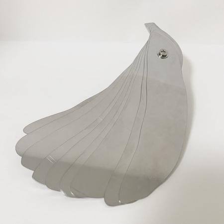
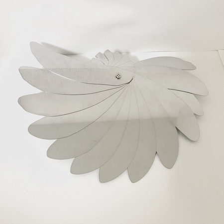
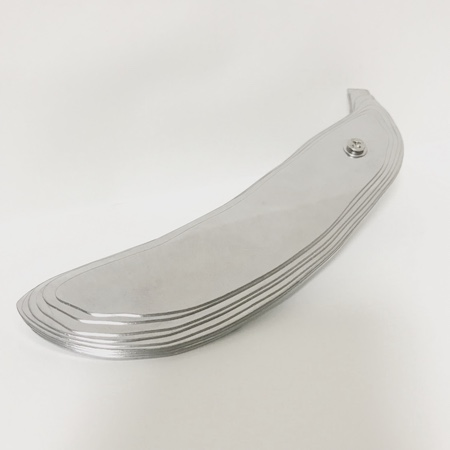

バナナの落し蓋



コンセプト
使い勝手悪いのになんか可愛くて欲しくなる落し蓋
商品説明
スライドした直径240mm 厚み11mm バナナ型直径144mm
煮物や肉じゃがなど味に染み込ませたいものに使う落し蓋をバナナ型で作りました。
※ステンレスなのでとても重いです。※重いので重石にも使えると思います。
使用方法
使い方は一枚一枚をスライドさせて一周円を作ります。
あとは普通の落し蓋と同じようにお鍋の中に落としてください。
取り扱い上の注意
・この製品は調理を目的としたものです。他の用途に使用しないでください。
・食器用洗剤で汚れをよく洗い流してください。
たわし又は磨き粉でみがくと傷がつくことがあります。
お手入れ方法
・初めて使用するときは食器用洗剤でよく洗ってください。
・使用後は柔らかい布かスポンジに洗剤をつけてよく洗い、乾いた布で水分を拭き取ってから、
乾燥したところに収納してください。